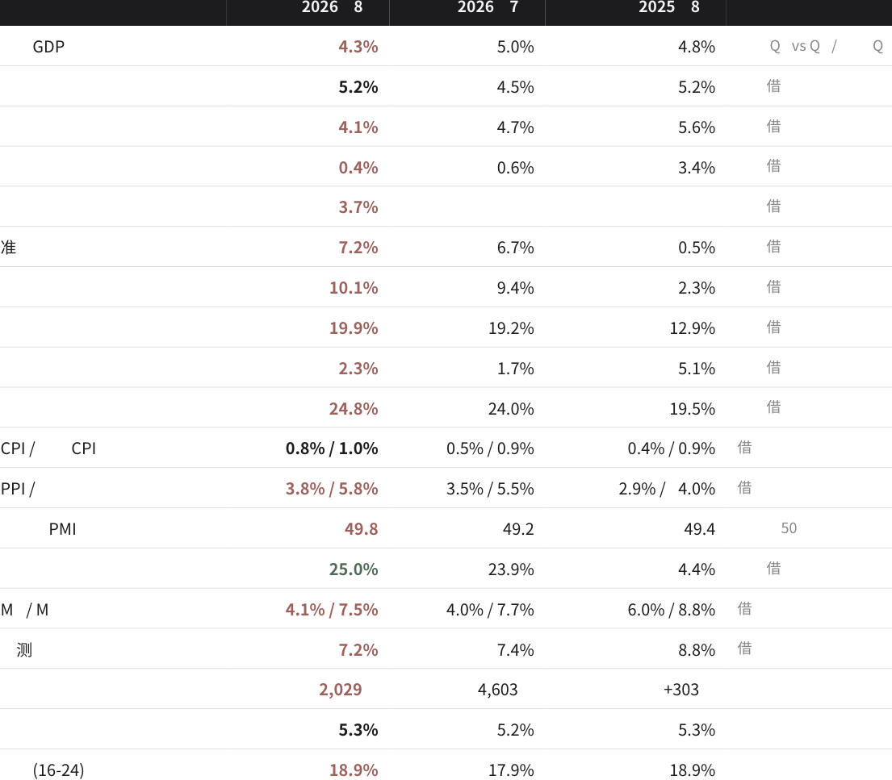

C H I N A M A C R O - F I S C A L M O N I T O R · 2 0 2 6 年8 月
2026年8月中国财政（中央 / 地方）与宏观经济数据报告：8月切面、近一年趋势、8月
政策对照与风险清单
+5.7%
一般公共预算收入
1-8月累计；中央+9.1%，地
方+3.1%
−17%
政府性基金支出
1-8月，51,948亿元
0.4%
社会消费品零售总额
8月当月；限上−3.7%
−1.03万亿
住户贷款
1-8月累计净减少
五个核心判断
+1.2%
一般公共预算支出
1-8月；地方仅+0.3%
4.3%
实际GDP
2026Q2，三年新低
+3.8%
PPI
8月；购进价格+5.8%
66%
地方债用于还旧
1-8月再融资与化债占比
−28.6%
土地出让收入
1-8月，13,753亿元
−7.2%
固定资产投资
1-8月；民间投资−10.1%
18.9%
青年失业率
16-24岁，持平纪录高位
94.8%
地方债余额/限额
8月末，59.9万亿元
① 税收增长主要来自油价推高的PPI和股市成交，不是需求复苏 ② 两本账合计看，财政在收紧而非放松
③ 地方债三分之二用于借新还旧，化债正在挤出投资 ④ 卖地收入只覆盖卖地相关支出的63%
⑤ 居民在去杠杆，青年失业高企，供强需弱的剪刀差仍在扩大
数据截至2026年10月14日 · 来源：财政部国库司、国家统计局、中国人民银行、海关总署、财政部政府债务研究和评估中心等 · 单月数据由累计数推算
一、财政总览：8月切面
1-8月累计与8月单月，亿元。单月同比按官方累计同比反推上年可比基数计算，为推算值。
| 1-8月 | 累计同比 | 较1-7月 | 8月单月 | 单月同比 | |
|---|---|---|---|---|---|
| 一般公共预算收入 | 156,633 | +5.7% | →12,937 | +4.6% | |
| 税收收入 | 129,104 | +6.6% | →10,723 | +5.5% | |
| 中央收入 | 70,118 | +9.1% | →6,261 | +9.1% | |
| 地方本级收入 | 86,515 | +3.1% | ▼-0.2 | 6,676 | +0.8% |
| 一般公共预算支出 | 181,451 | +1.2% | →18,562 | +0.3% | |
| 中央本级支出 | 28,177 | +6.0% | ▼-0.2 | 3,394 | +4.6% |
| 地方支出 | 153,274 | +0.3% | ▼-0.2 | 15,168 | -1.5% |
| 地方政府性基金收入 | 18,127 | -22.9% | ▲+1.9 | 2,680 | -9.8% |
| 土地出让收入 | 13,753 | -28.6% | ▲+2.2 | 2,022 | -12.5% |
| 政府性基金支出 | 51,948 | -17.0% | ▼-0.6 | 6,538 | -20.9% |
| 债务付息支出 | 9,188 | +5.4% | ▲+0.2 | 1,222 | +6.7% |
| 中央与地方分化：8月单月中央收入+9.1%，地方本级收入仅+0.8%；地方一般支出单月−1.5%，中央本级支出+4.6%。 | |||||
| 土地出让降幅收窄到−12.5%，但这是在2025年下半年的低基数上；8月单月仅2,022亿元，不到2025年12月单月的六分之一。 | |||||
| 政府性基金支出单月−20.9%：专项债“发得多”与基金支出“花得少”同时出现，资金很可能被用于偿债而非形成实物工 |
作量（推断）。
中央收入累计增速从2025年全年的−6.5%拉升到+9.1%，地方本级收入始终在2%–3%之间徘徊。增量主要集中在中央。
地方支出增速从2025年1-7月的+2.5%一路降到+0.3%。地方没钱，最先砍掉的是农林水、城乡社区、交通运输这类建设性
支出。
二、收入：谁在撑起+5.7%？
税收增量中约76%来自增值税、企业所得税和证券交易印花税，主要由价格和资本市场驱动，而不是终端需求。
证券交易印花税1-8月2,160亿元，已超过2025年全年的2,035亿元，贡献了约12%的税收增量。一旦股市降温，这部分就
会消失。
增值税与企业所得税合计贡献约5,100亿元增量，同期PPI从−2.9%翻正到+3.8%，主因是2月底霍尔木兹危机推高油价。这
是价格带来的收入，不是需求。
国内消费税−3.6%与限上零售−3.7%同向，说明终端消费确实在走弱。
三、土地财政：塌陷尚未见底
地方政府性基金预算本级收入−22.9%，其中土地出让收入−28.6%。
2025年全年土地出让收入41,518亿元，其中12月单月就有12,399亿元，年末突击特征明显；2026年前8个月月均仅约1,700
亿元。
8月28日现房销售与预售资金新规出台后，开发商回款被推迟到竣工之后，拿地能力和意愿可能进一步下降（推断）。地方
失去的是一笔结构性收入。
四、支出：钱去哪了、没去哪
刚性支出在涨，发展性支出在缩，广义财政在收紧。
债务付息9,188亿元，超过科技支出（6,001亿元）和交通运输支出（6,924亿元）。
预算执行偏慢：一般公共预算支出完成年初预算30.01万亿元的约60.5%，政府性基金支出只完成11.87万亿元的约43.8%。
7月30日政治局会议要求“加快支出进度”，8月单月支出同比基本持平（+0.3%）。
两本账合计：支出233,399亿元，比上年同期的241,926亿元少约8,500亿元。经济最需要托底的时候，财政脉冲是负的。
五、债务：借新还旧的循环
地方债发行创年内新高，但新增资金很少进入实体投资。
债务指标数值说明
| 8月地方债发行 | 11,945亿元 | 年内月度新高；其中再融资债5,505亿元 |
|---|---|---|
| 8月新增专项债 | 5,213亿元 | 1-8月29,293亿元，完成全年4.4万亿元额度的66.6%，截至8月末当周的进度落后于2025年同期（约74.5%，国盛证券） |
| 地方政府债务余额（8月末） | 598,955亿元 | 一般债179,194亿元、专项债419,761亿元；占限额631,874亿元的94.8% |
| 全国政府债务（2025年末） | 102.5万亿元 | 含隐性债务6.5万亿元；含隐债负债率73.2% |
| 置换债进度1.73万亿元 | 截至7月末，完成2026年2万亿元额度的86.7%；Wind口径8月末约1.84万亿元 | |
| 1-8月地方债付息 | 10,594亿元 | 8月单月1,617亿元 |
| 城投债8月净融资 | −795亿元 | 年内最大净流出；1-8月发行3.24万亿元，同比−12.1%（中诚信口径） |
| 超长期特别国债9,720亿元 | 1-8月累计，完成1.3万亿元额度的74.8% | |
| · 化债的逻辑是把高息隐债换成低息法定债，利息确实省了（6万亿元置换累计节约利息约6,000亿元），但债务总量没有减少，只是从城投转到了政府账上。 | ||
| · 城投净融资转负加上专项债进度落后，基建投资−4.0%，“化债”和“稳投资”之间的矛盾已经很明显。 |
六、宏观仪表盘：8月 vs 7月 vs 去年同期
红色为恶化或处于警戒区。

七、需求：供强需弱的剪刀差
生产端维持5%左右，需求端一路下滑。
5月社零当月同比−0.6%，为本轮首次转负；8月仅+0.4%，建筑及装潢材料类−11.8%。
固定资产投资按可比口径为−7.2%；直接用公布的绝对额相比（293,092亿元 vs 326,111亿元）则是−10.1%。统计基数修订
掩盖了一部分下滑。
工业生产保持在5%左右，制造业投资却从+5.1%跌到−2.3%：企业在消化产能，不愿扩产。
八、楼市：价稳，量与投资仍在塌
一线城市新房、二手房价格自3月起环比转正，但二手房价下跌城市数从3月的53个回升到62个，企稳只在少数城市。
新开工−24.8%、开发企业到位资金−21.0%，供给端在继续收缩。这直接对应土地出让收入的下降。
九、价格与信用：输入型通胀遇上信用收缩
PPI转正主要来自油价、有色和煤炭，生活资料价格仍为负。上游涨价没有传到终端，中下游利润被挤压。
1-8月规上工业利润+15.7%，但应收账款28.88万亿元、同比+8.5%（7月末）：账面利润好看，现金回流变慢。
十、8月政策对照：政策对上数据了吗？
✕ 与数据所需方向不符或力度不足 △ 方向对、量级不够 ! 新增风险点
| 日期 | 发布方 | 要点 | 对应的数据现实 | 评估 |
|---|---|---|---|---|
| 7/30中央政治局会议加快财政支出和债券使用进度；适时出台增量1-8月一般支出进度约60.5%，基金支出仅政策；常态化清欠；稳楼市、化债43.8%，“加快”未兑现 | ✕ | |||
| 8/1起财政部·人行·金融财政金融协同促内需：信用卡分期纳入贴息；住户贷款1-8月净减约1.03万亿元，贴息撬监管总局个人消费贷贴息上限3000→5000元；经营贷不动去杠杆上限翻倍 | △ | |||
| 8/12人民银行二季度货政报告：未释放降息降准信号M2增速7.5%，17个月新低；8月MLF净回笼1000亿元 | ✕ | |||
| 8/18商务部等9部门县域消费18条乡村社零8月+1.6%，但限上零售−3.7% | △ | |||
| 8/18国务院公积金条例修改：租房提取取消门槛，新增装长期利好，短期不改变购房意愿修、物业费提取 | △ | |||
| 8/20LPR1年3.0%、5年3.5%，连续15个月不动核心CPI 1.0%，居民实际融资成本仍高 | ✕ | |||
| 8/20上海“沪八条”外环外二套首付20%→15%；以旧换新最高补一线房价已企稳，二手跌价城市却回升至8万元62个 | △ | |||
| 8/21财政部发布会下半年仍有2万多亿元专项债和超长期特别国债发得快，但约2/3用于还旧债债待发；置换债完成86.7% | △ | |||
| 8/21国常会加快清欠，专项债和再贷款支持，整治大企业规上工业应收账款28.88万亿元，同比拖欠+8.5%（7月末） | △ | |||
| 8/25国务院向人大报告2025年末政府债务102.5万亿元，含隐债6.5万地方债余额59.9万亿元，已用限额94.8%亿元 | ! | |||
| 8/28住建部·人行·金融预售须主体封顶；新地优先现房销售；预售房开发商回款周期被拉长，新开工−24.8%或监管总局贷竣工后才放款；房贷最长40年；月供/收入继续承压≤50% | ! | |||
| 8/28财政部·税务总局地方附加税法（征求意见）：三税费合并，税税负平移，不新增地方财力率11%–13% | △ | |||
| 8/31商务部等7部门商品消费扩容升级：2030年社零约60万亿元1-8月社零仅增1.1% | △ |
总基调：8月政策以结构性、制度性为主（房地产销售制度、地方附加税、统一大市场），总量性工具基本缺席：LPR不
动，MLF净回笼，没有新增财政规模。
最大的错配：政治局要求“加快支出”，8月基金支出单月却−20.9%；要求“稳楼市”，8月28日的现房销售与预售放贷新
规短期内反而会收紧开发商现金流。
值得关注：财政部表态“适时谋划增量政策”，10月已启动中央金融机构注资特别国债。四季度能否有实质性加码，是下
一个观察点。
十一、风险清单：数据背后的八个隐忧
按严重度排序；●●● 为高。
风险数据证据传导与含义严重度
财政收入“通胀幻
●●●
| 税收增量7,993亿元中，证券交易印花税+973亿元； | 油价或股市一旦回落，收入增速随之失 |
|---|---|
| PPI +3.8%推高增值税和企业所得税；实际GDP仅 | 速；8月单月增值税增速已降至+4.1% |
| 4.3% | |
| 两本账广义缺口从6.73万亿元收窄至5.86万亿元；基 | 需求最弱时财政在收缩，形成顺周期 |
| 金支出−17%；8月地方一般支出单月−1.5% | |
| 地方债约66%用于再融资或化债；城投8月净融资 | 债务“展期”而非“去化”，投资缺少资 |
| −795亿元；基建投资−4.0% | 金来源 |
| 土地出让收入−28.6%，只覆盖相关支出的63%；契 | 8/28现房销售新规进一步拖慢拿地 |
| 税−14.2%，土地增值税−13.6% | |
| 住户贷款1-8月−1.03万亿元；M1仅4.1%；限上零售 | 消费贴息额度远小于居民去杠杆的规模 |
| −3.7%；青年失业率18.9% | |
| 购进价格+5.8%高于出厂价格+3.8%；生活资料 | 成本难以转嫁，民营与下游企业现金流承 |
| PPI−0.5%；应收账款+8.5% | 压（推断） |
| 出口（美元）+25%，但工业出口交货值仅+11.1%； | 增长更依赖外部和价格因素，易受地缘与 |
| 月度顺差1,191亿美元 | 贸易摩擦冲击 |
| 债务付息9,188亿元，是科技支出的1.53倍；农林水 | 发展性支出被持续压缩 |
| −6%，城乡社区−3% |
觉”
●●●
●●○
●●○
后续观察点
观察项为什么重要触发信号
9月财政数据（10月中下旬发布）检验收入是否继续由价格支撑增值税单月增速跌破4%
四季度增量政策财政脉冲能否转正追加赤字或新增专项债额度、动用结存限额
油价与PPI收入端的最大变量9月PPI+5.0%；若油价回落，税收将同步放缓
住户贷款与M1居民去杠杆是否止住住户贷款连续两个月为正
新开工与土地成交现房销售新规的冲击新开工降幅扩大至−25%以上
附：数据来源与口径
财政部国库司《2026年1-8月财政收支情况》gks.mof.gov.cn/tongjishuju/202609/t20260918_3997709.htm，以及2025年1-7月至2026年1-7月各期累计数据（共13期）
国家统计局《8月份国民经济运行平稳、发展向新向优》stats.gov.cn/sj/zxfb/202609/t20260915_1965307.html；固定资产投资、房地产、社零、70城房价、PPI/CPI各期发布
中国人民银行金融统计数据报告、LPR公告；海关总署进出口数据
财政部政府债务研究和评估中心《2026年8月地方政府债券发行和债务余额情况》zwgls.mof.gov.cn/tjsj/202609/t20260924_3998108.htm
《国务院关于2025年度政府债务管理情况的报告》《国务院关于今年以来预算执行情况的报告》（2026年8月25日）
财政部8月21日国新办发布会；住建部等《关于完善商品住房销售制度的通知》；银发〔2026〕171号；财政部·税务总局《地方附加税法（征求意见稿）》
城投债：中诚信国际《2026年8月城投债市场运行分析》；特殊新增专项债、8月末置换债进度：Wind（经上海证券报）
GDP平减指数：机构测算，非官方发布。70城下跌城市数：按统计局城市表计数。
口径说明：①单月数据由相邻两期累计数相减；单月同比用“累计值÷(1+累计同比)”反推上年可比基数，与官方口径一致，但仍是推算值。②2025年全年数据
为“比上年”口径，因此12月单月推算值波动较大。③广义缺口为一般公共预算与政府性基金预算的原始公布值相加，未扣除调入调出。④标注“推断”的内容
是分析判断，不是官方数据。